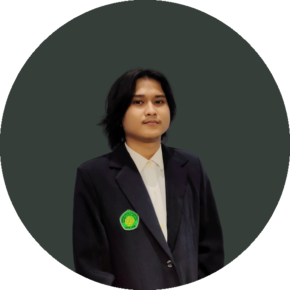

ABOUT ME

PENDIDIKAN
JADWAL
| No | Hari | Jam | Kelas | Mata Kuliah | SKS | Dosen Pengampu |
|---|---|---|---|---|---|---|
| 1 | Senin | 08:10 - 09:50 | B | Praktikum Rekayasa Perangkat Lunak | 1 | Supriyono,M.Kom |
| 2 | Selasa | 06:30 - 08:10 | A | Praktikum Jaringan Komputer | 1 | Johan Ericka Wahyu Prakasa,M.Kom |
| 3 | Selasa | 08.10 - 09.50 | B | Praktikum Grafika Komputer | 1 | Juniardi Nur Fadila,M.T. |
| 4 | Rabu | 06.30 - 08.10 | E | Praktikum Pemrograman WEB | 1 | Agung Teguh Wibowo Almais, S.Kom, M.T. |
| 5 | Rabu | 09:00 - 11:30 | C | Computer Graphic | 3 | Fresy Nugroho, M.T. |
| 6 | Rabu | 12:20 - 14:50 | D | Jaringan Komputer | 3 | Johan Ericka Wahyu Prakasa,M.Kom |
| 7 | Kamis | 08:10 - 10.40 | C | Pemrograman WEB | 3 | Agung Teguh Wibowo Almais, S.Kom, M.T. |
| 8 | Kamis | 12.20 - 14.50 | F | Artifial Intellegence | 3 | Dr. Cahyo Crysdian,MCS |
| 9 | Jumat | 06.30 - 09.00 | F | Bahasa Inggris II | 3 | Ida Fitri Rahmawati,S.Pd., M.Pd |
| 10 | Jumat | 12:20 - 14:50 | H | Rekayasa Perangkat Lunak | 1 | Syahiduz Zaman, M.Kom |
AKTIVITAS
HOBI